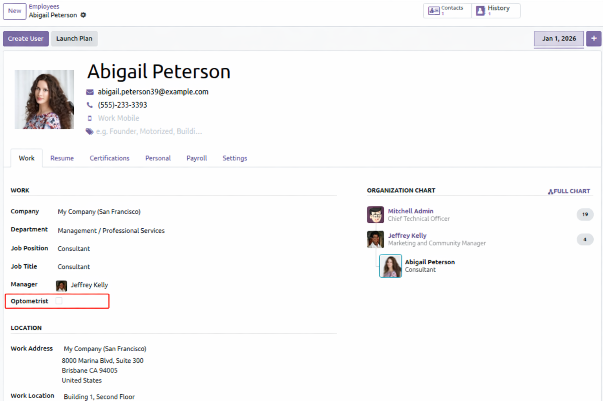
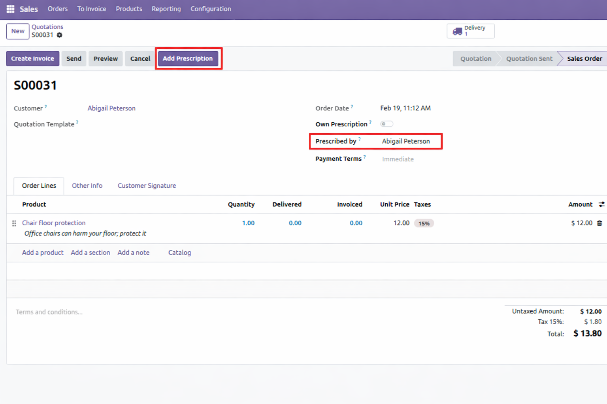
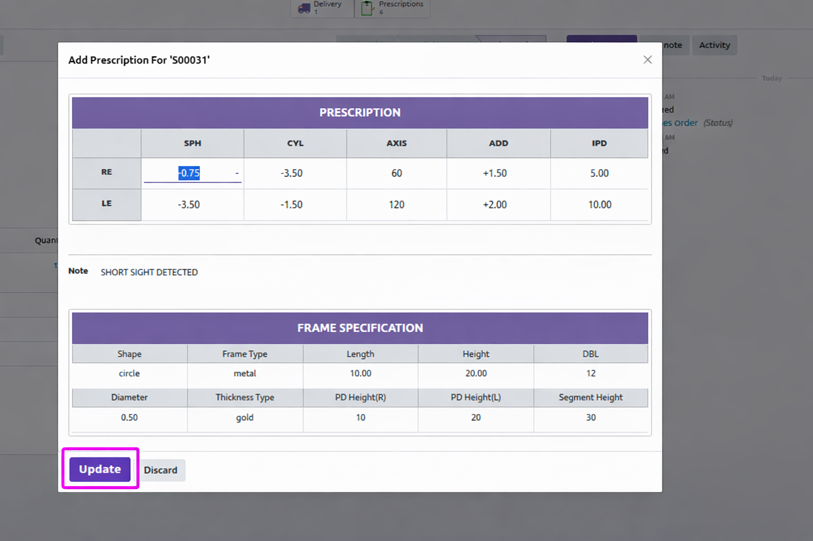
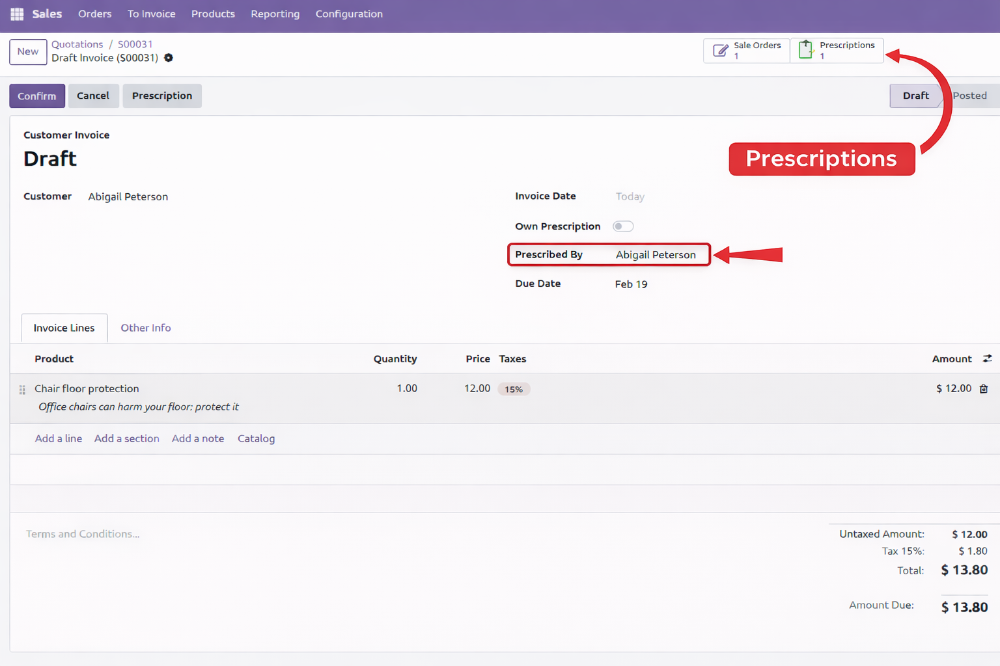
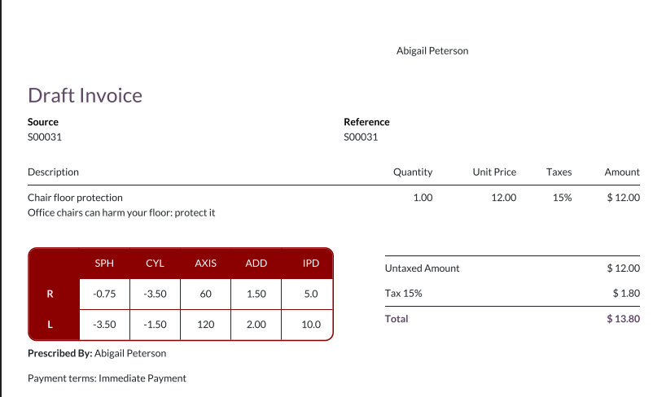
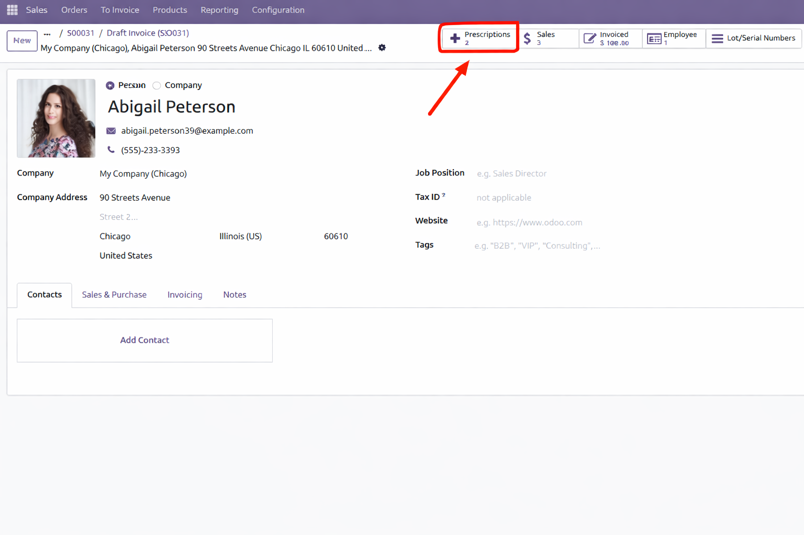

This module enables optical shops to create and manage detailed eye prescriptions directly from Sales Orders. Designed specifically for professional eyewear and optical businesses.
Enable the Optometrist boolean field in the Employee form to identify employees authorized to prescribe eye prescriptions.



Prescription information is automatically displayed inside the invoice form view, allowing staff to verify prescription data before confirmation.

The prescription details are printed directly on the invoice report, ensuring customers receive accurate eye power information along with billing.

The Prescriptions Smart Button is also available in the Contact form view, allowing quick access to all prescriptions related to the customer.

Designed for Optical Shops & Eyewear Businesses
Compatible with Odoo Community & Enterprise
Version: 19.0.1.0.0